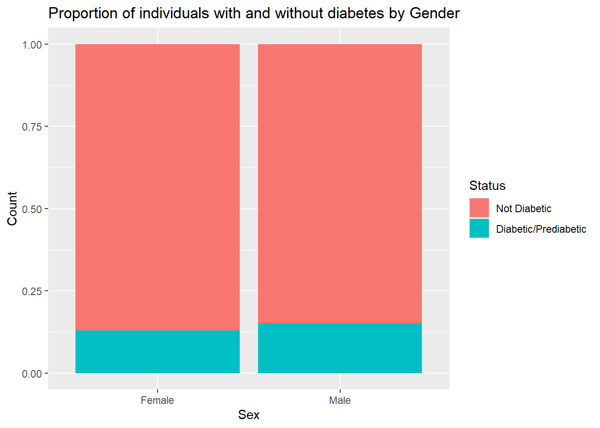
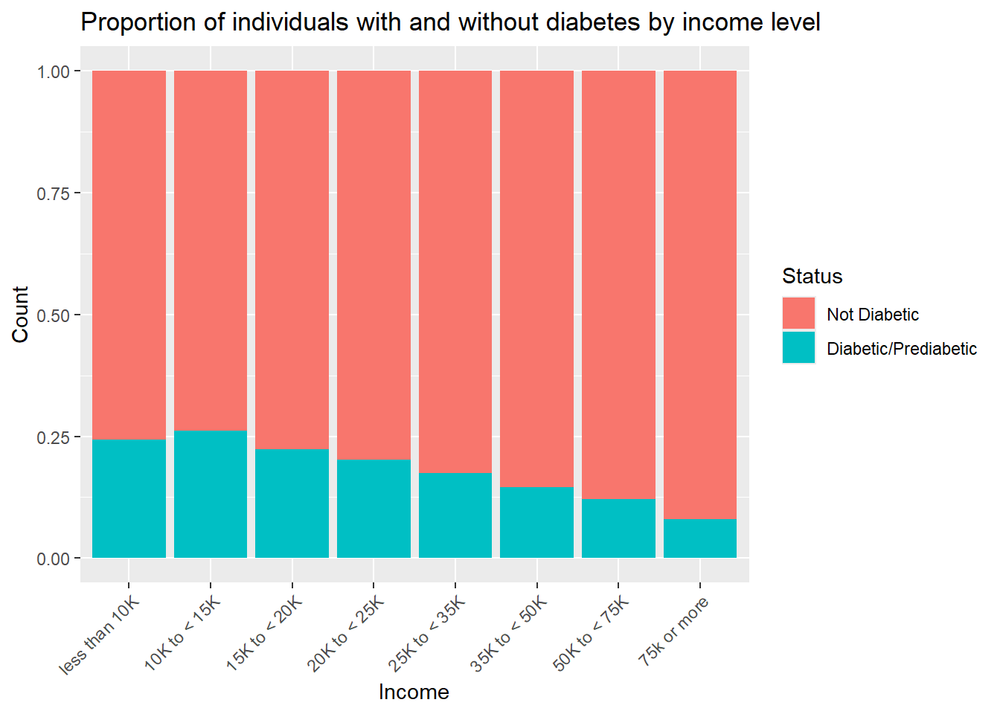
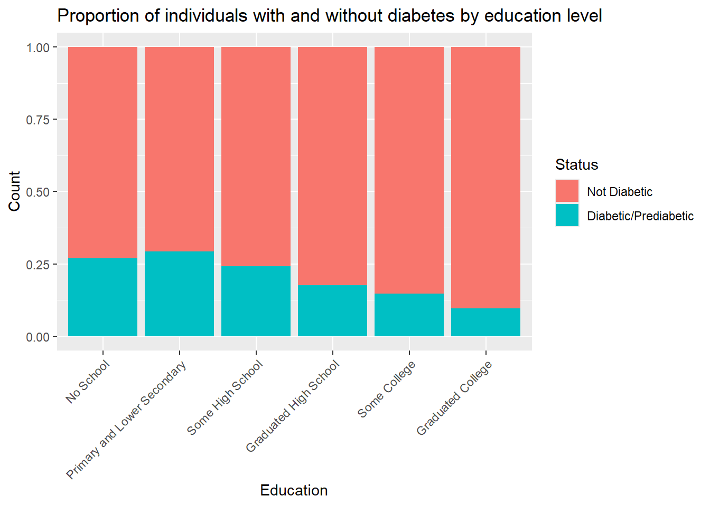
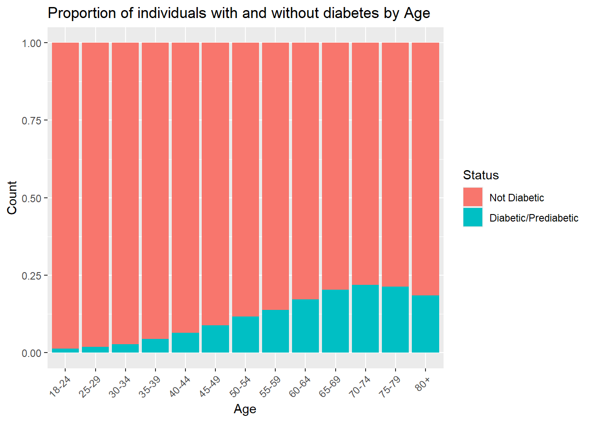
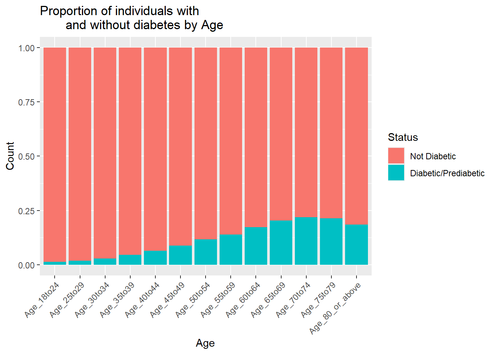
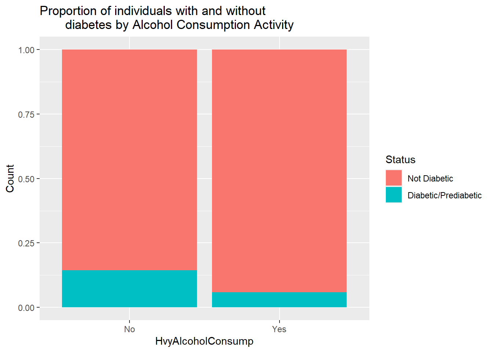
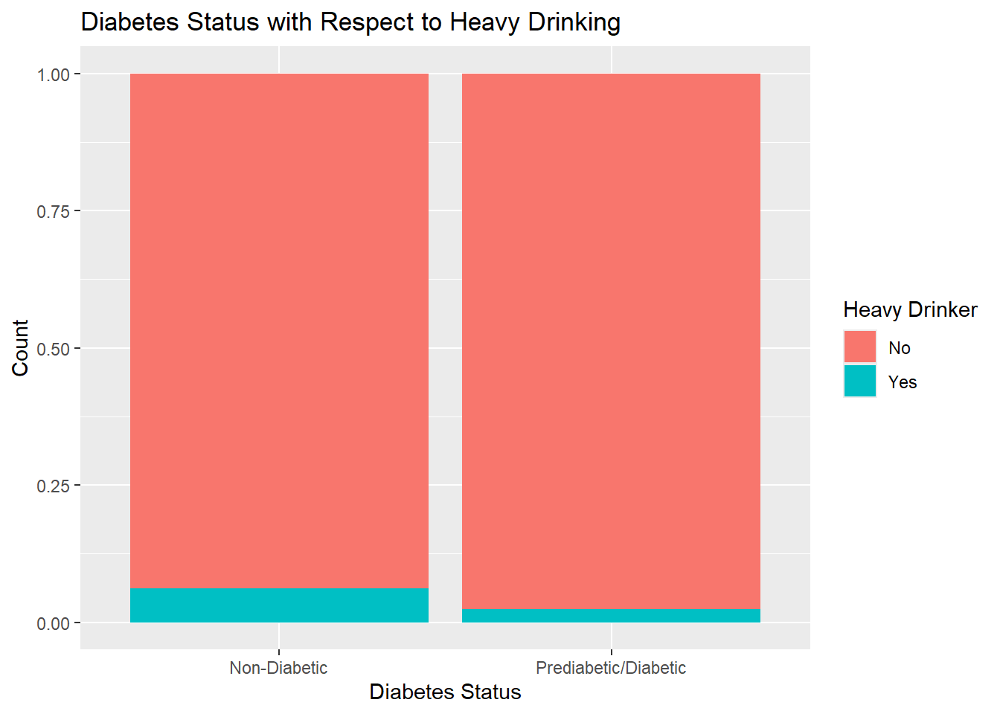
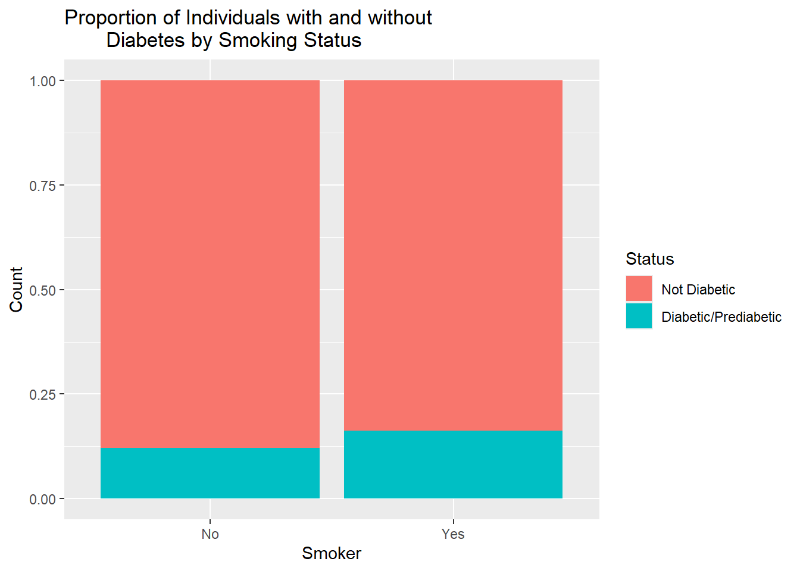
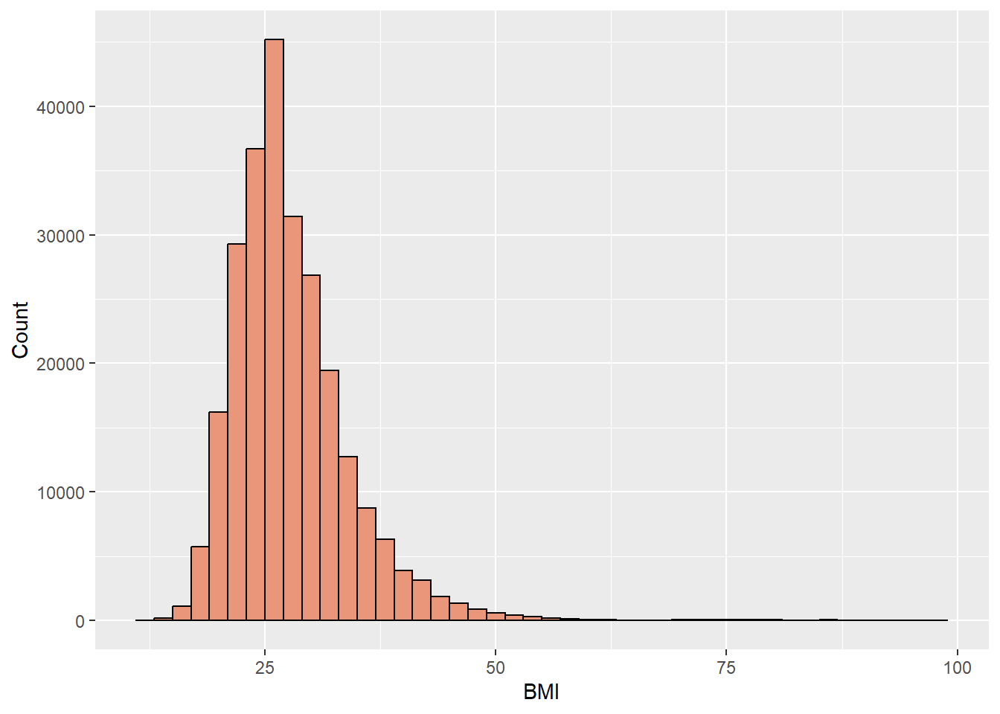

Exploratory Data Analysis of the Diabetes Health Indicators Set
Author
Melanie Beebe
Introduction
The Behavioral Risk Factor Surveillance System (BRFSS) is a system run by the Centers for Disease Control and Prevention (CDC) that uses telephone surveys to collect health-related information from individuals in the United States every year. The system began in 1984 and collects more than 400,000 responses each year. The Diabetes Health Indicators Dataset that will be discussed here is a subset of the data obtained from the BRFSS for 2015. This data set contains 21 of the original 330 variables and 253.680 of the 441,455 original responses. Retention of the 21 variables in this data was based on what was believed to have potential relevance for diabetes.
The goal of this document is to use exploratory data analysis (EDA) to understand the data through validation, examining missingness, cleaning up the data and investigating distributions. This information can also help us decide what variables to include in our model. The end goal of this project is to obtain the best model to predict diabetes. Details of the EDA are presented below. The response variable is Diabetes_binary, where 0 indicates that the individual does not have diabetes and 1 means the individual has prediabetes or diabetes. The variables chosen to be included in the modeling process are ……. body mass index (BMI)…..
EDA Analysis
The first step is to read in the data. Since the data is a csv file, this can be done using read_csv() from tidyverse.
library(tidyverse)library(psych)library(caret)# read in data setdiabetes_data <-read_csv("diabetes_binary_health_indicators_BRFSS2015.csv")diabetes_data
The first data step in EDA is to check for missing values. This data was already cleaned so missing values are not expected. Using is.na() shows that there are in fact no missing values.
# check for missing values in each columncolSums(is.na(diabetes_data))
The distinct() function can be used to verify that there are no missing values in a form other than NA. Looking at the output below, we can see that there is nothing unusual. Most of the categories have 0’s and 1’s which generally correspond to no (0) and yes(1), with the exception of Fruits, Veggies and Sex. The categories with other numbers have various meanings depending on the category but the numbers are consistent with what is expected based on the kaggle website’s Diabetes Health Indicators Dataset Notebook.
#check for unusual values that could indicate missingnessunique_values <- diabetes_data |>distinct()unique_values
The next step is to summarize the variables. The simplest method for doing so is to use describe() from the psych package. Below is the summary for this data. Nothing appears out of the ordinary in the summary. As we would expect, most have a minimum of 0 and a maximum of 1. BMI, MentHlth and PhysHlth are the only variables that are truly numeric and this is reflected in the summary.
For the most of the data, since it is categorical, we can look at contingency tables to get an idea of their relationship with diabetes status. For this purpose, the data is going to be manipulated first. The categorical variables will be converted to factors and the levels renamed to better communicate what the levels actually mean. For this purpose, factor() will be use as it allows renaming of levels and specifying if a factor is ordered, as some of the categories are.
# A tibble: 253,680 × 22
Diabetes_binary HighBP HighChol CholCheck BMI Smoker Stroke
<fct> <fct> <fct> <fct> <dbl> <fct> <fct>
1 0 Yes Yes Yes 40 Yes No
2 0 No No No 25 Yes No
3 0 Yes Yes Yes 28 No No
4 0 Yes No Yes 27 No No
5 0 Yes Yes Yes 24 No No
6 0 Yes Yes Yes 25 Yes No
7 0 Yes No Yes 30 Yes No
8 0 Yes Yes Yes 25 Yes No
9 1 Yes Yes Yes 30 Yes No
10 0 No No Yes 24 No No
# ℹ 253,670 more rows
# ℹ 15 more variables: HeartDiseaseorAttack <fct>, PhysActivity <fct>,
# Fruits <fct>, Veggies <fct>, HvyAlcoholConsump <fct>, AnyHealthcare <fct>,
# NoDocbcCost <fct>, GenHlth <fct>, MentHlth <dbl>, PhysHlth <dbl>,
# DiffWalk <fct>, Sex <fct>, Age <ord>, Education <ord>, Income <ord>
Now that the data is properly formatted, contingency tables can be generated. The distribition of males and females appears to be relatively similar, with males appearing to have a slightly higher propensity to have prediabetes or diabetes compared to women. Because the difference amounts to less than a few percent, this variable will be excluded from the modeling process.
# A tibble: 2 × 3
Sex `0` `1`
<fct> <int> <int>
1 Female 123563 18411
2 Male 94771 16935
We can also use bar charts to visualize the proportions of category levels relative to the diabetes variable. This visualization makes it easier to see the similarities or differences in proportions.
ggplot(diabetes, aes(x = Sex, fill = Diabetes_binary)) +geom_bar(position ="fill") +labs(y ="Count", title ="Proportion of individuals with and without diabetes by Gender") +scale_fill_discrete(name="Status", labels =c("Not Diabetic", "Diabetic/Prediabetic"))

In looking at income, the prevalence of diabetes generally decreases as income increases, indicating that socioeconomic status may be an important predictor of diabetes. This variable will be included in the model fitting process.
# A tibble: 8 × 3
Income `0` `1`
<ord> <int> <int>
1 less than 10K 7428 2383
2 10K to < 15K 8697 3086
3 15K to < 20K 12426 3568
4 20K to < 25K 16081 4054
5 25K to < 35K 21379 4504
6 35K to < 50K 31179 5291
7 50K to < 75K 37954 5265
8 75k or more 83190 7195
ggplot(diabetes, aes(x = Income, fill = Diabetes_binary)) +geom_bar(position ="fill") +labs(y ="Count", title ="Proportion of individuals with and without diabetes by income level") +scale_fill_discrete(name="Status", labels =c("Not Diabetic", "Diabetic/Prediabetic")) +theme(axis.text.x =element_text(angle =45, hjust =1))

Next, we will examine the contingency table for eductation. Based on the output, it appears that the decreases with income. This is consistent with the contingency table for income, since income is generally associated with level of education. Looking at the bar chart, the patterns for income and education look nearly identical.
# A tibble: 6 × 3
Education `0` `1`
<ord> <int> <int>
1 No School 127 47
2 Primary and Lower Secondary 2860 1183
3 Some High School 7182 2296
4 Graduated High School 51684 11066
5 Some College 59556 10354
6 Graduated College 96925 10400
Looking at the bar chart, the patterns for income and education look nearly identical.
ggplot(diabetes, aes(x = Education, fill = Diabetes_binary)) +geom_bar(position ="fill") +labs(y ="Count", title ="Proportion of individuals with and without diabetes by education level") +scale_fill_discrete(name="Status", labels =c("Not Diabetic", "Diabetic/Prediabetic")) +theme(axis.text.x =element_text(angle =45, hjust =1))

The potential relationship between education and income should be examined because these two variables could be correlated and therefore redundant, which could affect the model predictions. To get a view of the relationship, a contingency table can be created. In looking at the output below, it appears that the number of individuals generally decreases as income level increases at the lower education levels, and increases at the higher education levels, suggesting that these variables are correlated.
#contingency table for education and incomecont_table <- diabetes |>group_by(Education, Income) |>summarize(count =n(), .groups ="drop") |>pivot_wider(names_from = Income, values_from = count)cont_table
# A tibble: 6 × 9
Education `less than 10K` `10K to < 15K` `15K to < 20K` `20K to < 25K`
<ord> <int> <int> <int> <int>
1 No School 37 25 28 18
2 Primary and Lowe… 900 741 740 605
3 Some High School 1536 1465 1709 1453
4 Graduated High S… 3594 4692 6511 8029
5 Some College 2437 3315 4664 6310
6 Graduated College 1307 1545 2342 3720
# ℹ 4 more variables: `25K to < 35K` <int>, `35K to < 50K` <int>,
# `50K to < 75K` <int>, `75k or more` <int>
We can look into these variables further by testing independence with a Chi-Sqare test. The analysis, shown below, indicates that these variables are correlated, as indicated by the low p-value. Since education has a low frequency of numbers in the “No School” category, dropping this variable from the model fitting is a practical choice.
Next, we will examine the contingency table for age. Based on the output, it appears that the incidence of diabetes generally increases with age, so this variable will be included in the model fitting.
ggplot(diabetes, aes(x = Age, fill = Diabetes_binary)) +geom_bar(position ="fill") +labs(y ="Count", title ="Proportion of individuals with and without diabetes by Age") +scale_fill_discrete(name="Status", labels =c("Not Diabetic", "Diabetic/Prediabetic")) +theme(axis.text.x =element_text(angle =45, hjust =1))

Next, the relationship between the diabetes variable and Fruits will be examined. The proportions for no fruit and 1 or more a day are similar, 0.129 vs 0.158) so this variable will be excluded from modeling.
Similarly, vegetable consumption does not appear to be an important variable for diabetes classification, with proportions of 0.18 and 0.13 for the diabetes category.
The contingency table for PhysActivity shows that the proportion of those with diabetes who do not exercise is nearly double that of those without diabetes who do exercise. This variable may be important for diabetes prediction, although it’s relevance may be more closely tied to how much a person exercises in the time period specified. The question to respondents was if they had engaged in any physical activity in the last 30 days so it does not take into account frequency of exercise in that time period. However, may people who exercise at all try to do so regularly, so this variable will be included in the modeling process.
# A tibble: 2 × 3
PhysActivity `0` `1`
<fct> <int> <int>
1 No 48701 13059
2 Yes 169633 22287
ggplot(diabetes, aes(x = PhysActivity, fill = Diabetes_binary)) +geom_bar(position ="fill") +labs(y ="Count", title ="Proportion of individuals with and without diabetes by Physical Activity") +scale_fill_discrete(name="Status", labels =c("Not Diabetic", "Diabetic/Prediabetic"))

The HvyAlcoholConsump variable may be important for diabetes prediction. The contingency table below shows that the proportion of individuals who don’t drink alcohol heavily and have diabetes is close to 3 times that of those who do drink heavily and have diabetes.
# A tibble: 2 × 3
HvyAlcoholConsump `0` `1`
<fct> <int> <int>
1 No 204910 34514
2 Yes 13424 832
ggplot(diabetes, aes(x = HvyAlcoholConsump, fill = Diabetes_binary)) +geom_bar(position ="fill") +labs(y ="Count", title ="Proportion of individuals with and without diabetes by Alcohol Consumption Activity") +scale_fill_discrete(name="Status", labels =c("Not Diabetic", "Diabetic/Prediabetic"))

The NoDocbcCost represents whether an individual did or did not see a doctor because of the healthcare cost. The contingency table shows that the proportions of individuals with diabetes for the two NoDocBcCost levels were similar, at 0.136 and 0.175. Because of the similarity, this variable will not be included in model fitting.
# A tibble: 2 × 3
NoDocbcCost `0` `1`
<fct> <int> <int>
1 No 200722 31604
2 Yes 17612 3742
The AnyHealthcare variable is similar in proportion for both levels for those with diabetes, with proportions of 0.115 and 0.140. This variable will be excluded from model fitting.
# A tibble: 2 × 3
AnyHealthcare `0` `1`
<fct> <int> <int>
1 No 10995 1422
2 Yes 207339 33924
The contingency table below for the HeartDiseaseorAttack variable suggests that this variable may be important for prediction. Nearly 32% of respondents who had heart disease or a heart attack had diabetes, compared to 12% of those who did not have these conditions.
# A tibble: 2 × 3
HeartDiseaseorAttack `0` `1`
<fct> <int> <int>
1 No 202319 27468
2 Yes 16015 7878
Below is a visualization of the HeartDiseaseorAttack variable.
ggplot(diabetes, aes(x = HeartDiseaseorAttack, fill = Diabetes_binary)) +geom_bar(position ="fill") +labs(y ="Count", title ="Proportion of individuals with and without diabetes by Heart Disease or Hart Attack Status") +scale_fill_discrete(name="Status", labels =c("Not Diabetic", "Diabetic/Prediabetic"))

The contingency table for stroke is shown below. Nearly 32% of those respondents who had a stroke had diabetes, compared to those who didn’t have a stroke (13%). This suggests that this variable may be important for predicition.
# A tibble: 2 × 3
Stroke `0` `1`
<fct> <int> <int>
1 No 211310 32078
2 Yes 7024 3268
The Smoker variable does not appear to be particularly important for diabetes prediction an the proportions are similar. This seems contradictory since it is known that smokers are more likely to have diabetes since nicotine makes cells less responsive to insulin. But the question for respondents was “Have you smoked at least 100 cigarettes (5 packs) in your entire life?” which communicates nothing about when in their life that was and if they are currently smoking. Consequently, this variable will be left out of the model fitting.
# A tibble: 2 × 3
Smoker `0` `1`
<fct> <int> <int>
1 No 124228 17029
2 Yes 94106 18317
ggplot(diabetes, aes(x = Smoker, fill = Diabetes_binary)) +geom_bar(position ="fill") +labs(y ="Count", title ="Proportion of Individuals with and without Diabetes by Smoking Status") +scale_fill_discrete(name="Status", labels =c("Not Diabetic", "Diabetic/Prediabetic"))

The contingency table for CholCheck shows that the proportions of those who have had their cholesterol checked in the last 5 years and those who have not and have diabetes are 0.025 and 0.144. While the difference may be significant, people who are sick or have chronic conditions are more likely to have their cholesterol checked more frequently than healthy individuals. Thus this variable is not necessarily important for prediction, but rather reflective of diabetes management, which may also be accompanied by other health conditions. For these reasons, this variable will be excluded from the model fitting.
# A tibble: 2 × 3
CholCheck `0` `1`
<fct> <int> <int>
1 No 9229 241
2 Yes 209105 35105
The contingency table for DiffWalk is below. For individuals with diabetes, the proportion of those who responded yes to difficulty walking or climbing stairs is 0.307 compared to that of those who responded no, 0.105. This variable may be important for predicting diabetes and will be included in model fitting.
# A tibble: 2 × 3
DiffWalk `0` `1`
<fct> <int> <int>
1 No 188780 22225
2 Yes 29554 13121
8742/(8742+136109)
[1] 0.06035167
26604/(26604+82225)
[1] 0.2444569
The contingency table for HighChol shows proportions of 0.08 for those who don’t have high cholesterol but have diabetes, compared to 0.22 for those how have high cholesterol and diabetes. Since this is more than a 2-fold difference and diabetes and high blood pressure often occur together, this variable will be included in the model fitting.
# A tibble: 2 × 3
HighChol `0` `1`
<fct> <int> <int>
1 No 134429 11660
2 Yes 83905 23686
Similar to HighChol, HighBP among those with diabetes was 4 times that of those without high blood pressure. High blood pressure often occurs in conjunction with diabetes as part of metabolic syndrome and so will be included in the model fitting.
# A tibble: 2 × 3
HighBP `0` `1`
<fct> <int> <int>
1 No 136109 8742
2 Yes 82225 26604
We can look at the distribution of BMI in this data by examining a histogram. The distribution is relatively normal with some right skew. Since the data is unbalanced, with more respondents not having diabetes, the skewed portion of the histogram likely corresponds to individuals with diabetes. Generally speaking, a BMI between 18.5-24.9 corresponds to a normal weight.
ggplot(data = diabetes, aes(BMI)) +geom_histogram(binwidth =2, fill ="darksalmon", color ="black") +labs(y ="Count")

To view the strength of the relationship between BMI and diabetes, we can use point-biserial correlation, which allows calculation of the correlation between a dichotomous variable and a continuous variable. Point-biserial correlation is a modified form of Pearson correlation and can be performed using cor.test(). Both variables need to be numeric. The output p-value and “true correlation” indicate that the correlation between diabetes and BMI is significant, which is consistent with what is known about type II diabetes. This variable will be included in modeling.